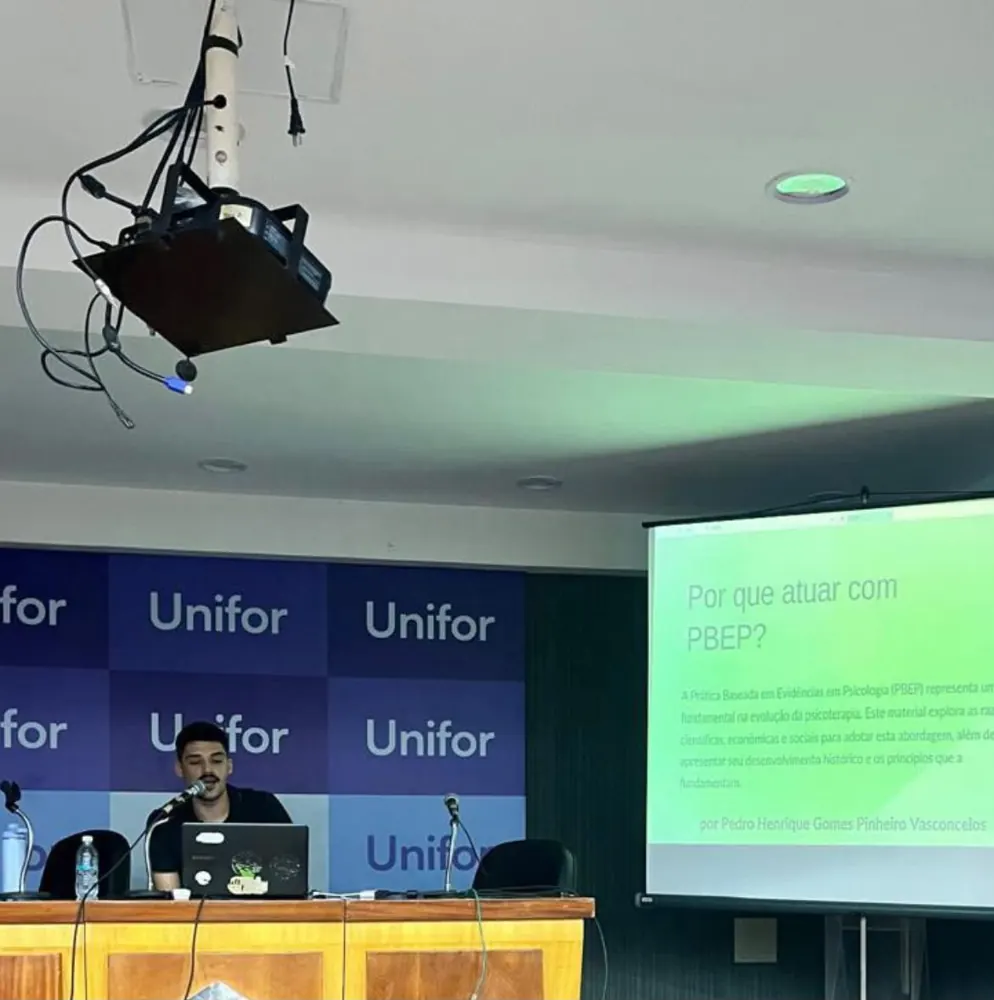

Terapia Cognitivo-Comportamental · online
Método para decidir. Cuidado para acompanhar.
Psicoterapia individual para adultos, no Brasil e no exterior, dentro da prática baseada em evidências.
Cada decisão do seu tratamento junta três fontes
Nenhuma substitui as outras. É isso que a prática baseada em evidências quer dizer, na prática.
A pesquisa científica
O que os estudos mais confiáveis mostram para dificuldades parecidas com a sua.
A competência clínica
Entender o seu caso, construir uma boa relação de trabalho e acompanhar a evolução.
Você
Seus objetivos, valores, rotina e contexto de vida. Você participa das decisões.
Sobre
Prazer, eu sou o Pedro.
Sou psicólogo clínico, formado pela Universidade de Fortaleza (Unifor) em 2024, e atendo adultos em psicoterapia individual online, com base na Terapia Cognitivo-Comportamental.
Começamos entendendo juntos o que mantém as suas dificuldades. A partir daí, parto de tratamentos já testados em pesquisa e ajusto ao que o seu caso pede.
Minha formação e como trabalho →Psicologia baseada em evidências, em poucos minutos

Publicações e divulgação
Pesquisa e ciência fora do consultório
- Artigo · PLURAL (UNESP) · 2025Estratégias de redução de danos na perspectiva do behaviorismo radical
- Coautoria · CIAIQ · 2026Rede de cuidado: vínculos afetivos e saúde mental de mulheres universitárias
- Coautoria · CIAIQ · 2026Compras compulsivas em redes sociais: uma análise netnográfica
Vamos conversar?
Primeira sessão online, de 50 minutos. Você escolhe o dia e o horário.